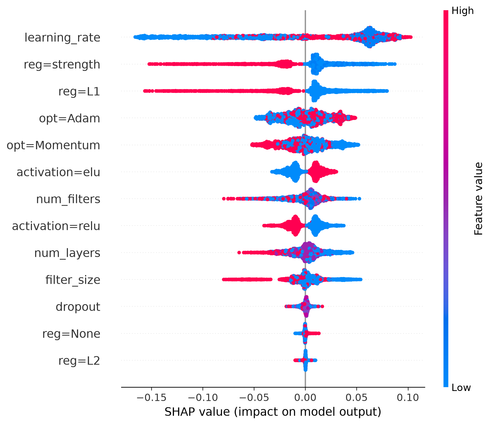
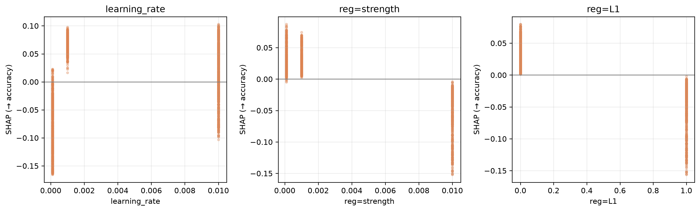
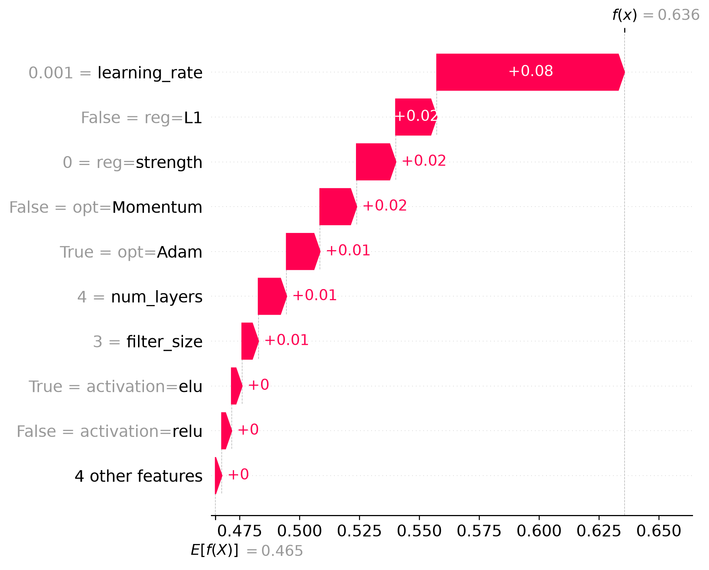

Which hyperparameters drive Base-CNN accuracy? Gini importance and SHAP
Date: 18/07/2026
GOHREP
Goal:
Use the 8,640-model Base-CNN grid search as a dataset in its own right — hyperparameters in, mean CV accuracy (avg_vaf) out — and ask which hyperparameters actually move accuracy, and in which direction. A random forest ranks them by Gini importance (mirroring 10_image_entropy §6.6) and SHAP attributes each model’s accuracy to its settings, with direction (mirroring §6.7).
Hypothesis:
A few “don’t-mess-it-up” levers — learning rate, optimizer, and regularisation — dominate, while architecture size (filters, kernel, depth) matters modestly and dropout barely at all. And, tying back to analyses/08_accuracy_noise_floor: this signal is about reaching the top plateau; inside the plateau the hyperparameters should explain very little, because the remaining differences are noise.
Rationale:
If hyperparameters had diffuse, equal effects, no config would consistently beat another and tuning would be hopeless. If instead a handful of levers dominate, the search is really a search for the right region, and SHAP will show each lever’s direction (e.g. which learning rate helps). Fitting the same model inside the plateau then tests whether anything explains the within-cluster ranking at all.
1. Setup
1.1 Packages
Code
# 1.1import globimport picklefrom pathlib import Pathimport numpy as npimport pandas as pdimport matplotlib.pyplot as pltimport shapfrom sklearn.ensemble import RandomForestRegressorplt.rcParams.update({"figure.dpi": 120})
/Users/jowillia/miniforge3/envs/autocdascorer-analyses/lib/python3.12/site-packages/tqdm/auto.py:21: TqdmWarning: IProgress not found. Please update jupyter and ipywidgets. See https://ipywidgets.readthedocs.io/en/stable/user_install.html
from .autonotebook import tqdm as notebook_tqdm
1.2 Load the full grid and build the feature matrix
The target is avg_vaf. Features are the searched hyperparameters; the three constant columns (epochs, batch_size, pooling_size) carry no information and are dropped. reg = None arrives as an empty cell, so it is made an explicit category. The three categoricals are one-hot encoded and columns are given readable names.
Code
# 1.2def find_repo_root(start: Path) -> Path:for p in [start, *start.parents]:if (p /"data"/"datasets"/"medoid_64"/"medoid_64.csv").exists():return praiseFileNotFoundError("repo root not found")ROOT = find_repo_root(Path.cwd())CNN_DIR = ROOT /"models"/"03_Medoid_CNN_RandomSearch"/"01_Categorical_Loss"frames = [pd.read_csv(CNN_DIR /"random_search_results.csv")]frames += [pd.read_csv(p) for p in glob.glob(str(CNN_DIR /"parts"/"*.csv"))]df = pd.concat(frames, ignore_index=True).drop_duplicates("model_id").reset_index(drop=True)df["reg"] = df["reg"].fillna("None")NUM = ["num_filters", "filter_size", "num_layers", "learning_rate", "reg_strength", "dropout"]CAT = ["activation_function", "reg", "opt"]def make_X(frame: pd.DataFrame) -> pd.DataFrame: X = pd.get_dummies(frame[NUM + CAT], columns=CAT) rename = {}for c in X.columns:for pfx, short in [("activation_function_", "activation="), ("reg_", "reg="), ("opt_", "opt=")]:if c.startswith(pfx): rename[c] = short + c[len(pfx):]return X.rename(columns=rename)X = make_X(df)y = df["avg_vaf"].valuesprint(f"{len(df)} models | {X.shape[1]} features: {list(X.columns)}")
The random forest fit and, especially, the SHAP TreeExplainer pass (plus the plateau refits in §5) are the only slow steps. They are computed once and cached to shap_cache/artifacts.pkl. The cache is keyed on a fingerprint of the input (row count, avg_vaf sum, feature columns), so editing the analysis re-runs instantly from the cache, while a changed results CSV auto-invalidates it and recomputes. Delete the shap_cache/ folder to force a full recompute.
Only plain arrays/floats are cached (not the shap.Explanation object), so the cache is robust across shap versions; the Explanation is rebuilt on load.
Code
# 1.3CACHE = Path("shap_cache")CACHE.mkdir(exist_ok=True)CACHE_FILE = CACHE /"artifacts.pkl"fingerprint =f"{len(df)}rows|{df['avg_vaf'].sum():.6f}|{list(X.columns)}"RF_KW =dict(n_estimators=400, min_samples_leaf=3, oob_score=True, bootstrap=True, n_jobs=-1, random_state=0)def oob_r2(frame: pd.DataFrame) ->float: m = RandomForestRegressor(**RF_KW) m.fit(make_X(frame), frame["avg_vaf"].values)returnfloat(m.oob_score_)def compute_artifacts() ->dict: rf = RandomForestRegressor(**RF_KW) rf.fit(X, y) rng = np.random.default_rng(0) best_pos =int(df["avg_vaf"].idxmax()) samp = rng.choice(len(X), size=min(3000, len(X)), replace=False)if best_pos notin samp: # guarantee the §4.5 waterfall row is explained samp[0] = best_pos Xs = X.iloc[samp].reset_index(drop=True) sv = shap.TreeExplainer(rf)(Xs) best_row =int(np.where(samp == best_pos)[0][0]) pools = [len(df), 4000, 2000, 1000, 500] r2s = [oob_r2(df.nlargest(k, "avg_vaf")) if k <len(df) elsefloat(rf.oob_score_)for k in pools]return {"fingerprint": fingerprint,"oob": float(rf.oob_score_),"imp_values": np.asarray(rf.feature_importances_),"feature_names": list(X.columns),"sv_values": np.asarray(sv.values),"sv_base": np.asarray(sv.base_values),"sv_data": np.asarray(sv.data),"best_row": best_row,"sv_rows": np.asarray(samp),"pools": pools,"r2s": r2s, }status ="computed and cached"art =Noneif CACHE_FILE.exists():withopen(CACHE_FILE, "rb") as fh: art = pickle.load(fh) status ="loaded from cache"if art.get("fingerprint") != fingerprint: art, status =None, "recomputed (input changed)"if art isNone: art = compute_artifacts()withopen(CACHE_FILE, "wb") as fh: pickle.dump(art, fh)# Rebuild the working objects from the cached arrays.feat_names = art["feature_names"]oob = art["oob"]importances = pd.Series(art["imp_values"], index=feat_names)sv = shap.Explanation(values=art["sv_values"], base_values=art["sv_base"], data=art["sv_data"], feature_names=feat_names)sv_best = sv[art["best_row"]]Xs = pd.DataFrame(art["sv_data"], columns=feat_names)mean_abs = pd.Series(np.abs(sv.values).mean(0), index=feat_names).sort_values(ascending=False)pools, r2s = art["pools"], art["r2s"]
SHAP artifacts: loaded from cache -> shap_cache/artifacts.pkl
2. A random forest predicts accuracy from hyperparameters alone
If hyperparameters determine accuracy, a model mapping settings → avg_vaf should fit well. Out-of-bag R² (honest, no separate split needed) is reported.
Code
# 2.1print(f"Out-of-bag R^2 (hyperparameters -> avg_vaf): {oob:.3f}")print("The settings explain the great majority of the accuracy spread across the grid.")
Out-of-bag R^2 (hyperparameters -> avg_vaf): 0.938
The settings explain the great majority of the accuracy spread across the grid.
3. Gini importance
Mean decrease in impurity ranks the features globally (magnitude only, no direction).
Random-forest Gini importance. Learning rate, optimizer and regularisation dominate; dropout is negligible.
4. SHAP: magnitude and direction of each lever
Gini importance is directionless. SHAP (SHapley Additive exPlanations) attributes each model’s predicted accuracy to its hyperparameters, so both how much and which way each lever pushes are visible. Computed with TreeExplainer on the forest (§1.3, cached); the beeswarm/scatter use the cached sample for legibility.
Code
# 4.1 Beeswarm: global importance + direction.shap.plots.beeswarm(sv, max_display=len(feat_names), show=False)plt.tight_layout()plt.show()

SHAP beeswarm. Each dot is one model; position is that hyperparameter’s contribution to predicted accuracy; colour is the feature value. Learning rate, optimizer and regularisation spread widest.
Code
# 4.2 Dependence for the top-3 features by mean |SHAP|.top3 = mean_abs.index[:3].tolist()fig, axes = plt.subplots(1, 3, figsize=(13, 4))for ax, feat inzip(axes, top3): j = feat_names.index(feat) ax.scatter(Xs[feat], sv.values[:, j], s=8, alpha=0.3, color="#DD8452") ax.axhline(0, color="grey", lw=1) ax.set_xlabel(feat) ax.set_ylabel("SHAP (→ accuracy)") ax.set_title(feat) ax.grid(alpha=0.25)plt.tight_layout()plt.show()

SHAP dependence for the three highest-impact features: how the contribution to accuracy changes with the setting.
Code
# 4.3 Mean |SHAP| table (the directionless magnitude ranking, for reference).mshap = (mean_abs.rename("mean_abs_shap").to_frame() .assign(mean_abs_shap=lambda d: (d["mean_abs_shap"] *100).round(3)))mshap.index.name ="feature"mshap
mean_abs_shap
feature
learning_rate
6.374
reg=strength
2.742
reg=L1
2.707
opt=Adam
1.758
opt=Momentum
1.681
activation=elu
1.292
num_filters
1.239
activation=relu
1.235
num_layers
1.192
filter_size
1.144
dropout
0.218
reg=None
0.084
reg=L2
0.069
Code
# 4.4 Waterfall for the rank-1 model.shap.plots.waterfall(sv_best, show=False)plt.tight_layout()plt.show()

SHAP waterfall for the single best-by-CV model: how its settings add up from the average prediction to its (high) accuracy.
5. Does the signal survive inside the plateau?
analyses/08_accuracy_noise_floor argued the top cluster is one noisy plateau. If so, the hyperparameters — which explain accuracy so well across the whole grid — should explain progressively less as the candidate pool is narrowed to the best models, because what is left is noise, not signal. The forest is refit on successively smaller top-k pools (computed in §1.3, cached).
Code
# 5.1for k, r inzip(pools, r2s):print(f" top-{k if k <len(df) else'all':<5}: OOB R^2 = {r:.3f}")labels = [("all"if k ==len(df) elsef"top-{k}") for k in pools]fig, ax = plt.subplots(figsize=(8, 4.5))ax.plot(range(len(pools)), r2s, "-o", color="#4C72B0")ax.set_xticks(range(len(pools)))ax.set_xticklabels(labels)ax.set_ylabel("OOB R² (hyperparameters → avg_vaf)")ax.set_xlabel("candidate pool (narrowing toward the best)")ax.set_title("Hyperparameters explain reaching the plateau, not ranking within it")ax.grid(alpha=0.25)plt.tight_layout()plt.show()
Out-of-bag R² of hyperparameters → accuracy, refit on successively smaller top-k pools. The explanatory power collapses inside the plateau.
6. Interpretation and Discussion
A few levers dominate (§3–§4). Learning rate, optimizer (Adam vs Momentum) and regularisation (type + strength) account for most of the Gini importance and the widest SHAP spreads; kernel size, filter count and depth matter modestly; and dropout is essentially inert on this task. Hyperparameter tuning here is really a search for the right region of a handful of settings, not fine control of all of them.
SHAP shows the directions (§4). Learning rate is the clearest: the mid value (1e-3) contributes positively while the smallest (1e-4, under-training in the fixed epoch budget) drags accuracy down; heavy L1 / large reg_strength push accuracy down; the optimizer split separates cleanly. These are actionable “set it here, avoid there” rules rather than a single magic config.
The signal is about reaching the plateau, not ranking within it (§5). Refit on smaller and smaller top-k pools, the out-of-bag R² falls from ~0.93 on the full grid to ~0.5 (top-1000) to ~0.34 (top-500). Once every model already uses a sensible region, the hyperparameters no longer explain who wins — matching analyses/03, where the top cluster’s CV ranking does not transfer to held-out test accuracy. The two analyses meet here: settings get you onto the plateau; luck orders you on it.
Practical takeaway. Fix the high-impact levers to their good region (learning rate ≈ 1e-3, the better optimizer, light/no regularisation) and stop trying to read meaning into the exact winning combination of the low-impact ones. For real gains beyond the ~62% ceiling, the lever is not a better CNN config but a different approach — the ViT sweep, augmentation, or ensembling the plateau.
Caveats. Importances are computed on avg_vaf, itself noisy (analyses/03); the collapse of R² inside the plateau is partly that noise becoming the dominant signal, which is exactly the point. One-hot columns split a categorical’s importance across its levels (e.g. opt=Adam and opt=Momentum are two views of one 2-level choice), so read them together. In-grid importances describe this dataset and search space, not CNNs universally.
## Thesis figure
::: {#9196103c .cell execution_count=12}
``` {.python .cell-code}
# T1 Mean |SHAP| over the whole grid against within the top plateau. The collapse inside
# the plateau is the point: levers that move accuracy across the full range stop moving it
# once every remaining config is statistically tied.
#
# SHAP rather than Gini, because the cached TreeExplainer values are already computed above
# and because Gini is directionless and biased toward high-cardinality splits. The whole-grid
# bars reuse `mean_abs` from section 1.3 unchanged; only the plateau subset is recomputed.
#
# The plateau is 1 SE of the best validation accuracy -- the same definition the noise-floor
# figure in analyses/08 uses, so the two figures describe the same set of models.
from pathlib import Path as _P
_tp = _P("thesis_plots"); _tp.mkdir(exist_ok=True)
_se = np.sqrt(0.65 * 0.35 / 2289)
_tied_mask = (df["avg_vaf"] >= df["avg_vaf"].max() - _se).to_numpy()
# The forest has to be REFITTED inside the plateau to ask whether a hyperparameter still
# matters there. Explaining the global forest on the tied rows answers a different question
# -- how that global model attributes those 22 predictions -- and returns learning_rate at
# the same importance inside the plateau as across the grid, which is an artefact of the
# global fit rather than a property of the plateau.
_rf_w = RandomForestRegressor(**RF_KW).fit(X, y)
_rf_t = RandomForestRegressor(**RF_KW).fit(X[_tied_mask], y[_tied_mask])
_whole = pd.Series(np.abs(shap.TreeExplainer(_rf_w)(X).values).mean(0), index=X.columns)
_plat = pd.Series(np.abs(shap.TreeExplainer(_rf_t)(X[_tied_mask]).values).mean(0),
index=X.columns)
_cols = _whole.sort_values().index
_fig, _ax = plt.subplots(figsize=(5.8, 4.2))
_y = np.arange(len(_cols))
_ax.barh(_y - 0.2, _whole[_cols].values, 0.4, color="#4C72B0",
label=f"Whole grid ({len(df)})")
_ax.barh(_y + 0.2, _plat[_cols].values, 0.4, color="#DD8452",
label=f"Tied within 1 SE ({int(_tied_mask.sum())})")
_ax.set_yticks(_y); _ax.set_yticklabels(_cols, fontsize=7)
_ax.set_xlabel("Mean |SHAP| on validation accuracy")
_ax.legend(fontsize=7.5, frameon=False)
_ax.spines[["top", "right"]].set_visible(False)
_fig.savefig(_tp / "hyperparameter_importance_collapse.png", dpi=300, bbox_inches="tight")
plt.show()